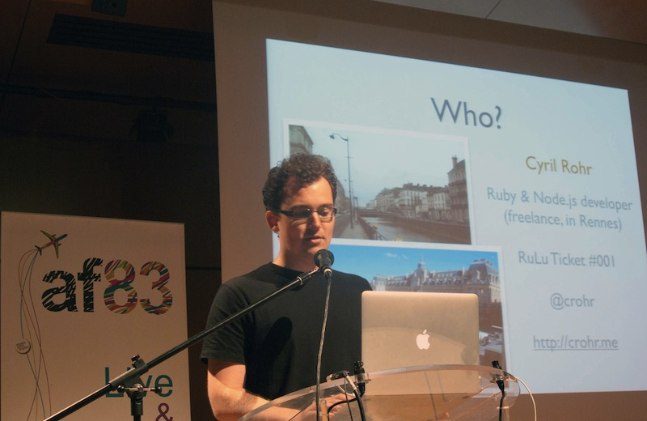

Rulu 2012
I just came back from Rulu 2012, the second edition of the best Ruby conference in France. Good food, perfect organization, nice location, very nice weather, and some good talks as well. Most importantly, almost twice as many people as last year, which means I met a lot of new people :)
A quick poll showed that more than 1/3 of the Rulu attendees are now working remotely, which is... unexpected, at least in France. Among those, it would have been interesting to know the proportion of freelancers and employees.

On the last day, I decided to register to do a lightning talk on pkgr. This was quite a challenge, as it was my first time speaking in front of so many people, talking about a not-so-easy subject (deployment and debian packaging), and I had to prepare a presentation on the spot during one of the morning breaks.
Obviously that led to a few issues: I did the mistake of putting way too many things on my slides (bullet points? with more than 3 words? whaaaat?), which diluted the point I was trying to make (which is: "deploying a Rails app -- especially off-the-shelf Rails apps such as Redmine -- is not as simple as it could be"); I couldn't show my last slide (5 mins is very quick); and I probably spoke a bit too fast.
I'm sure I'll find a lot more issues when/if the recording of the talk is made available. That being said, that makes for good practice, and it led to a few interesting discussions afterwards. But next time, I'll make sure to schedule and prepare my presentation before-hand.
See you all next year, or at BaRuCo in September!
Update: here is the recorded video of the talk.